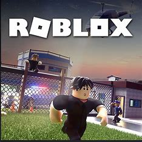
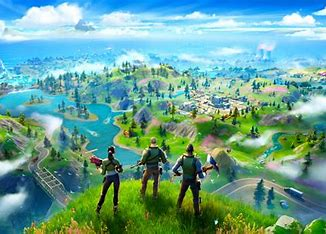
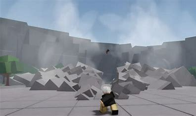
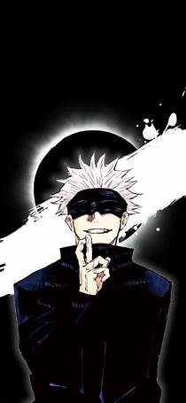
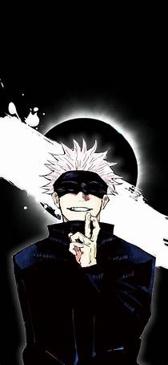
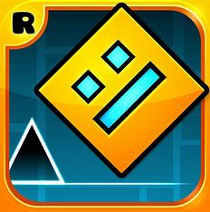

Hey friends, welcome to my website !
I am adding some of my favorite game details and the links
of their platform. Feel free to click and explore.

Roblox
Roblox is a super fun online world where you can play games made by people just like you! You can be a superhero, go on treasure hunts, or even run your own pizza shop. It's not just about playing games; if you love being creative, you can make your own games too, using easy tools that Roblox provides. Imagine sharing your own game with friends or playing games that they made just for you! Whether you're building, exploring, or going on epic adventures, Roblox is like a giant playground where your imagination is the limit.

Fortnite
Fortnite is an exciting game where you can jump into adventures and battle it out to be the last one standing! You can dress up your character in cool outfits and team up with friends or play solo. The game world changes with every season, bringing new themes and fun places to explore. You can build forts, find treasure, and even dance in epic dance-offs. Whether you're into exciting battles or just want to chill and build, Fortnite has something fun for everyone!

The Strongest Battlegrounds
The Strongest Battlegrounds is a Roblox fighting game based on the anime and manga One-Punch Man. Players can train their own original character or become one from the One-Punch Man world and fight against other players in immersive PvP battles. The game offers an intense multiplayer experience, with players fighting fiercely while exploring intricate settings with a variety of anime characters and weapons.


Blox Fruits
Blox Fruits is a game on Roblox that is all about beating up enemies . The game allows you to become a master swordsman or a powerful blox fruit user . You can train to become the strongest player to ever live, fight against tough enemies, or have powerful boss battles while sailing across the ocean to find hidden secrets. Blox Fruits is inspired by the popular anime One Piece and lets players choose between improving their swordsman skills or fruit user skills.
 
Jujutsu shenanigans
Characters are basically the different type of movesets and abilities you can have in the game. All the characters are based off of Jujutsu Kaisen characters such as Satoru Gojo for Honored One, Yuji Itadori for Vessel, etc. There are currently only 4 characters in the game. Every character possesses an awakening that provides the player with stronger moves similar to the character's moves in their base. To obtain an awakening, you must press on the blue bar above your moves once it is full. You can fill up the bar by damaging players.

Geometry Dash
Side-scrolling music platforming game series ! Geometry Dash is a side-scrolling music platforming game series developed by Robert Topala. The game was released on various platforms since 2013. In Geometry Dash, players control an icon and navigate music-based levels while avoiding obstacles. The game has 21 official levels and over 50 million online levels created by players. The player can use different forms that act differentl. The game has simple controls for easy fun.